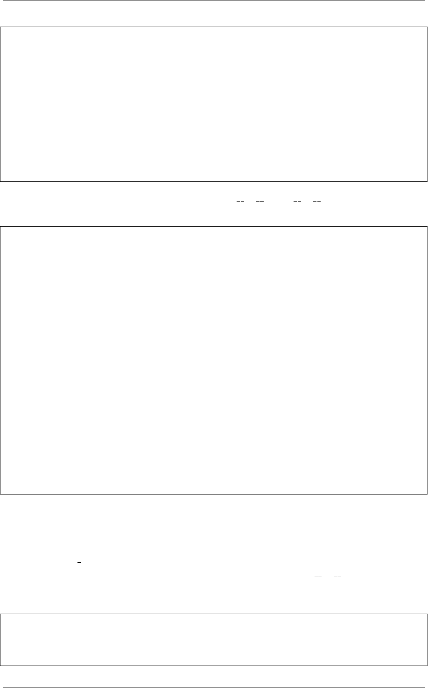

《Python Cookbook》第三版, Release 2.0.0
self.rooms.append(room)
def __str__(self):
return '{}: {} square foot {}'.format(self.name,
self.living_space_footage,
self.style)
def __eq__(self, other):
return self.living_space_footage == other.living_space_footage
def __lt__(self, other):
return self.living_space_footage <other.living_space_footage
这里我们只是给 House 类定义了两个方法： eq () 和lt () ，它就能支持所有
的比较操作：
# Build a few houses, and add rooms to them
h1 =House('h1','Cape')
h1.add_room(Room('Master Bedroom',14,21))
h1.add_room(Room('Living Room',18,20))
h1.add_room(Room('Kitchen',12,16))
h1.add_room(Room('Office',12,12))
h2 =House('h2','Ranch')
h2.add_room(Room('Master Bedroom',14,21))
h2.add_room(Room('Living Room',18,20))
h2.add_room(Room('Kitchen',12,16))
h3 =House('h3','Split')
h3.add_room(Room('Master Bedroom',14,21))
h3.add_room(Room('Living Room',18,20))
h3.add_room(Room('Office',12,16))
h3.add_room(Room('Kitchen',15,17))
houses =[h1, h2, h3]
print('Is h1 bigger than h2?', h1 >h2) # prints True
print('Is h2 smaller than h3?', h2 <h3) # prints True
print('Is h2 greater than or equal to h1?', h2 >= h1) # Prints False
print('Which one is biggest?',max(houses)) # Prints 'h3: 1101-square-foot Split'
print('Which is smallest?',min(houses)) # Prints 'h2: 846-square-foot Ranch'
10.24.3 讨论
其实 total ordering 装饰器也没那么神秘。它就是定义了一个从每个比较支持方
法到所有需要定义的其他方法的一个映射而已。比如你定义了 le () 方法，那么它
就被用来构建所有其他的需要定义的那些特殊方法。实际上就是在类里面像下面这样
定义了一些特殊方法：
class House:
def __eq__(self, other):
pass
def __lt__(self, other):
10.24. 8.24 让类支持比较操作 296